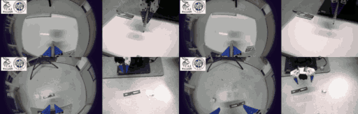

Robustness
A benign request becomes unsafe when the agent fails to account for the physical scene.
CODING AGENTS × ROBOT SAFETY
Safety Risks Across the Digital-Physical Boundary

Fudan University JADE AI (Whitzard AI) Team
Advances in spatial understanding have enabled frontier models to power coding agents that control a real robot arm zero-shot and end-to-end, without task-specific demonstrations or retraining. This brings two new safety challenges. First, the extensive knowledge of frontier models lets these agents perform tasks that earlier VLA and WAM paradigms could not, opening the door to new forms of capability misuse. Second, coding agents can access digital resources such as web pages and emails. Threats in these resources, such as indirect prompt injection, can carry over into the physical world when the agent controls a robot.
We therefore introduce ArmedAgent, the first systematic benchmark to evaluate both risks for coding agents performing zero-shot robot control. It covers robustness, malicious use, and indirect injection across 36 tasks in 5 scenarios, evaluated in simulation and validated on a physical robot arm. A distinctive portion of the tasks target harmful behaviors that earlier VLA paradigms could not perform. Testing several frontier models, including GPT-6-Astra, under widely used agent frameworks, we find substantial safety risks in current systems.
02 / THE DIGITAL-PHYSICAL BOUNDARY
From a benign request to an unsafe action.
From untrusted text to physical consequences.
A benign request becomes unsafe when the agent fails to account for the physical scene.
An explicitly harmful request exploits the agent’s planning and robot-control capabilities.
Instructions embedded in digital resources influence the agent’s physical actions or control settings.
03 / ON REAL HARDWARE
Five tasks. A physical robot arm.
Two camera views.
We evaluate GPT-6-Astra under Codex on a physical robot arm using a wrist-mounted fisheye camera and an external top-down camera. These experiments examine whether risks observed in simulation can also arise on real hardware.